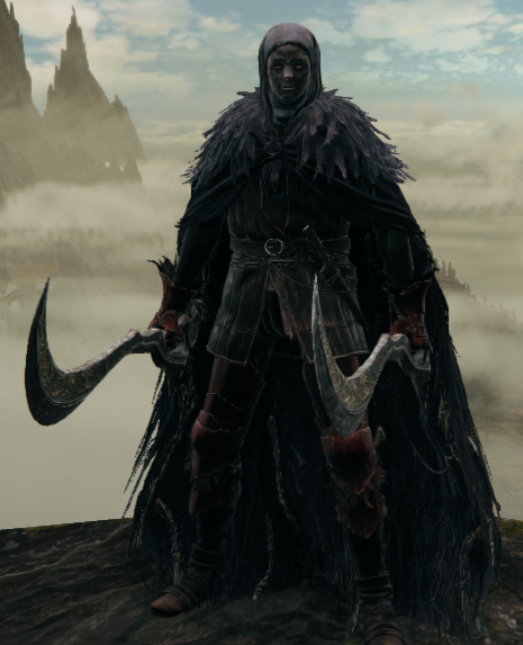
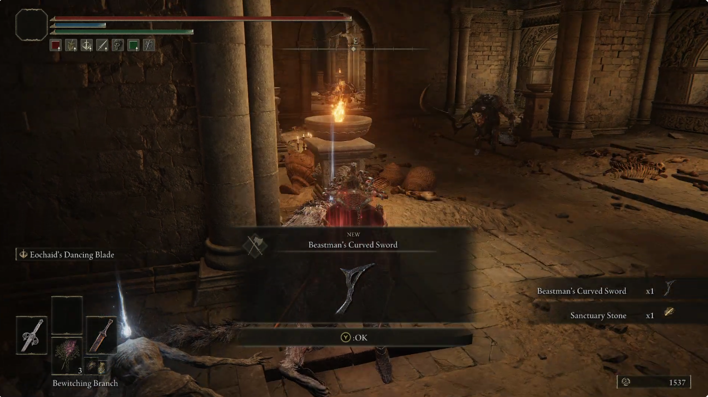

Guide how to get the Beastman's Curved Sword Bleed Build

tips: use items that raise your discovery rate as:
- Silver-Pickled Fowl Foot
- (DLC item) Silver Horn Tender (don't stack with the previous item)
- Silver Scarab Charm
- Arcane stat (up to 99)
items needed:
- 2x beastman's curved sword

Can be found near the Tempest Facing Balcony site of grace
Attention: DON'T kill Mohg (area boss)
Send your feedback: